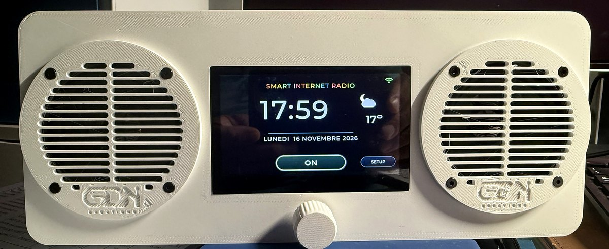
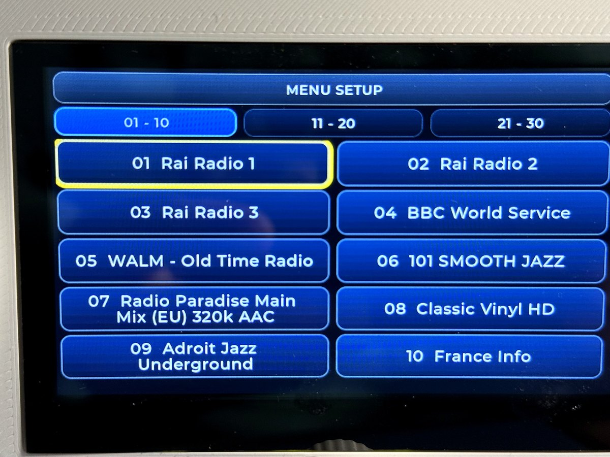
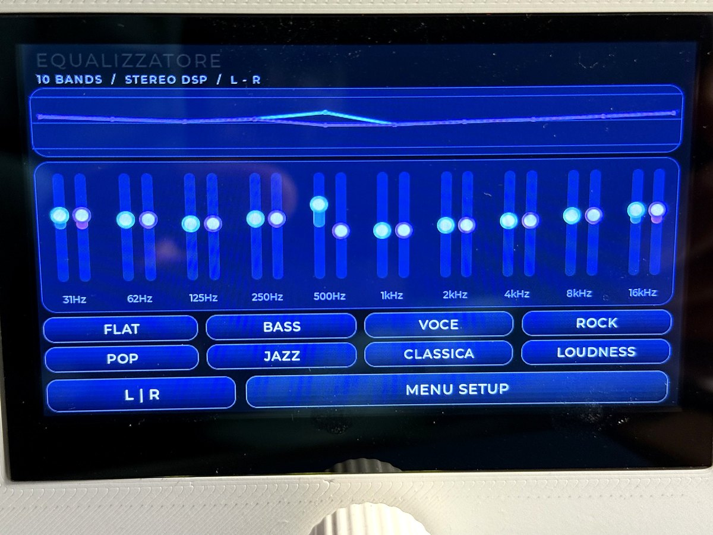
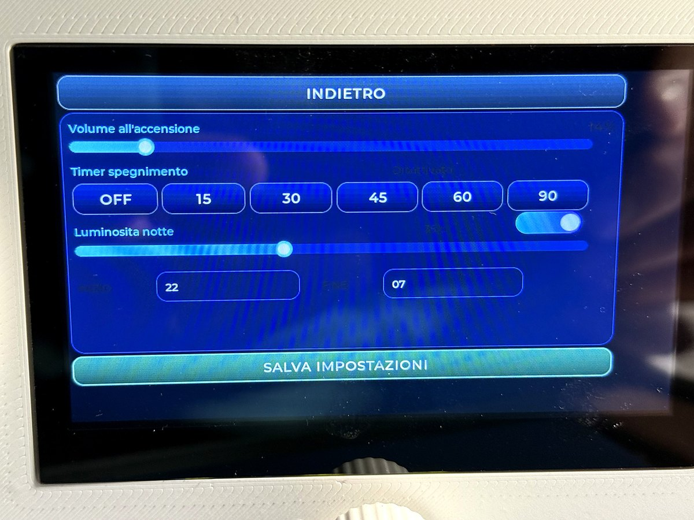
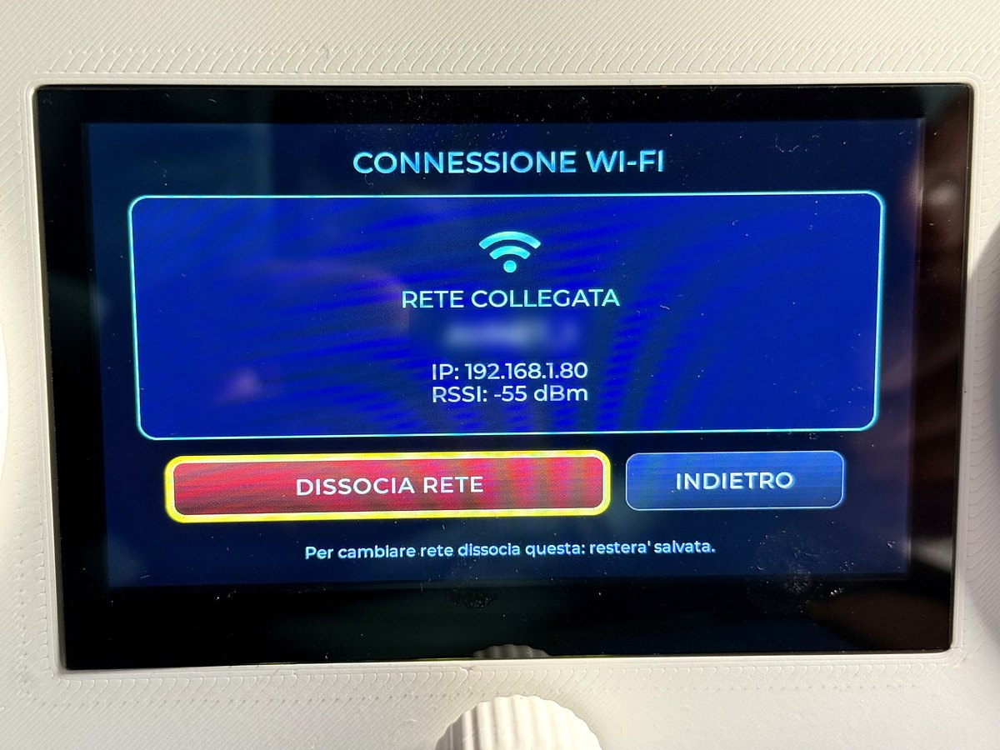
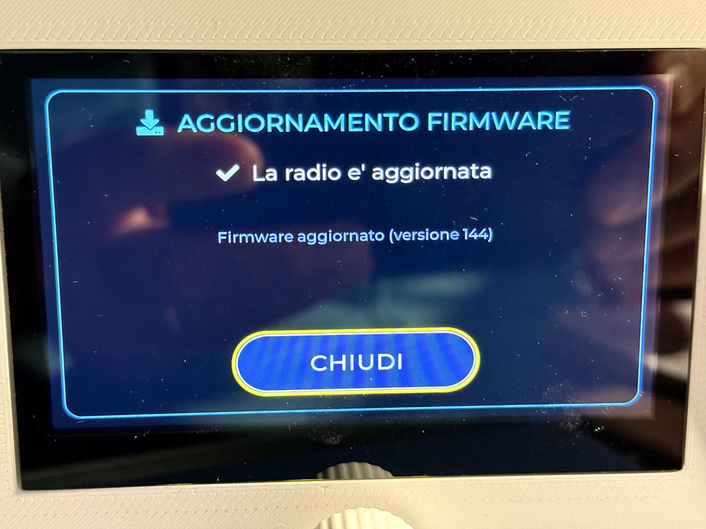

GDN Creations · Manuale di istruzioni
Smart Internet Radio
Versione con display touch 4,3" 800×480 · firmware 144 e successivi
1. Avvertenze di sicurezza
- Usare solo l'alimentatore fornito o un alimentatore equivalente da 12–24 V DC, di qualità certificata e adatto alla corrente richiesta.
- Usare la radio al chiuso, in un ambiente asciutto. Non esporla a pioggia, umidità, gocce o spruzzi e non appoggiarvi sopra contenitori di liquidi.
- Non coprire le griglie degli altoparlanti e non collocare la radio vicino a fonti di calore o alla luce diretta del sole.
- Non aprire il case con l'alimentazione collegata. All'interno non ci sono parti riparabili dall'utente.
- Il display è in vetro: non premerlo con oggetti appuntiti. Per pulirlo usare un panno morbido appena inumidito, senza solventi.
- Ascoltare a lungo ad alto volume può danneggiare l'udito.
2. Conoscere la radio

| Elemento | Funzione |
|---|---|
| Display touch 4,3" | Mostra stazione, brano, copertina, spettro, menu e orologio. Si usa toccando direttamente i pulsanti. |
| Manopola (encoder) | Ruotata sposta la selezione evidenziata; premuta conferma o entra nella modifica di un valore. |
| Altoparlanti | Due altoparlanti stereo a larga banda, sinistro e destro. |
| Presa di alimentazione | Ingresso per l'alimentatore esterno 12–24 V DC, sul retro. |
La radio non ha un interruttore di accensione dedicato: si accende collegando l'alimentatore. Per una pausa si usa la modalità standby, che ferma l'audio e mostra l'orologio (capitolo 15).
3. Installazione
- Appoggiare la radio su una superficie stabile, possibilmente a qualche centimetro dalla parete per un suono più pieno.
- Verificare che nel punto scelto arrivi bene il segnale Wi-Fi a 2,4 GHz. La radio non usa le reti a 5 GHz.
- Collegare l'alimentatore alla radio e poi alla presa di corrente. Dopo pochi secondi compare la schermata iniziale SMART INTERNET RADIO.
4. Prima accensione
Alla prima accensione, oppure quando non c'è nessuna rete salvata, una procedura guidata in tre passi prepara la radio.
Passo 1 — Lingua
Toccare la lingua desiderata: italiano, English, Deutsch, Français, Español o Українська.
Passo 2 — Rete Wi-Fi
- Premere CERCA: la radio elenca le reti disponibili. Le reti già salvate sono segnate con un asterisco (*).
- Selezionare la propria rete e premere AVANTI.
Passo 3 — Password
- Digitare la password con la tastiera sullo schermo. I caratteri restano visibili in chiaro per evitare errori.
- Usare SHF per le maiuscole, SPAZIO per lo spazio e il tasto rosso per cancellare l'ultimo carattere.
- Premere OK. Quando compare RETE CONNESSA, premere CONTINUA.
Rete e password vengono memorizzate. Dalle accensioni successive la radio si collega da sola e riprende l'ultima stazione ascoltata.
5. Touch e manopola
Ogni funzione si può usare in due modi, liberamente alternabili:
- Touch: toccare il pulsante o l'elemento desiderato. I cursori si trascinano con il dito.
- Manopola: ruotarla per spostare la selezione, indicata da un bordo luminoso. Premerla per attivare il pulsante selezionato. Su un cursore o un elenco, premere per entrare nella modifica, ruotare per cambiare il valore e premere di nuovo per confermare.
6. Schermata di ascolto

Durante l'ascolto il display mostra l'ora, il nome della stazione, il brano in onda (se l'emittente lo trasmette), la copertina dell'album o il logo della stazione e la visualizzazione audio scelta. In basso ci sono quattro pulsanti:
| Pulsante | Funzione |
|---|---|
| PRESET | Apre la pagina delle stazioni memorizzate. |
| VOL | Apre il controllo del volume a cerchio: regolarlo con il dito o con la manopola. Toccare fuori dal riquadro per chiuderlo. |
| ▶ / ❚❚ | Avvia o ferma la riproduzione. Dopo lo stop la radio non tenta di riconnettersi finché non si preme di nuovo Play. |
| STANDBY | Ferma l'audio e passa all'orologio (capitolo 15). |
Copertine dei brani
Quando l'emittente trasmette artista e titolo, la radio cerca la copertina dell'album. Ogni nuova copertina appare a tutto schermo per 3 secondi, poi resta nel riquadro. Toccando il riquadro la si rivede a tutto schermo. Se la copertina non è disponibile compare il logo della stazione o un simbolo musicale.
7. Cercare le stazioni

Aprire SETUP → RICERCA STAZIONI. La radio consulta un catalogo mondiale con decine di migliaia di emittenti.
- Toccare il campo Nome della radio… e scrivere il nome completo o parziale della stazione. Il campo si può anche lasciare vuoto.
- Se si vuole, restringere la ricerca con Tutti i paesi (Paese) e Tutti i generi (genere musicale). Con Altro genere… si può scrivere qualsiasi genere o tag.
- Premere CERCA. Con le frecce ‹ › si sfogliano le pagine dei risultati.
- Selezionare una stazione e premere ASCOLTA per riprodurla, oppure PRESET per salvarla nel primo preset libero.
Il pulsante ‹ MENU riporta al menu Setup.
8. I preset

La radio memorizza fino a 30 stazioni, divise in tre pagine da dieci.
- Ascoltare un preset: toccare il tasto con il nome della stazione.
- Salvare la stazione in ascolto: toccare il primo tasto libero, indicato con + PRESET nn.
- Cancellare un preset: tenere premuto il tasto per circa 2 secondi e confermare. I preset successivi scalano di una posizione.
I preset si gestiscono anche dalla pagina web (capitolo 12) e sono condivisi in tempo reale con il display.
9. Equalizzatore

Aprire SETUP → EQUALIZZATORE. Le dieci bande vanno da 31 Hz (bassi profondi) a 16 kHz (alti brillanti). Ogni banda ha due cursori, uno per il canale sinistro e uno per il destro.
- Preset sonori: FLAT (neutro), BASS, VOCE, ROCK, POP, JAZZ, CLASSICA, LOUDNESS.
- L | R: collega i due canali, così spostando un cursore si regola insieme anche l'altro.
- MENU SETUP salva la curva e torna al menu.
10. Display e aspetto

- Visualizzazione audio: SPETTRO (analizzatore stereo a 24 bande), VU METER oppure OFF.
- Aspetto schermata radio: CLASSICA (copertina, testi e spettro), HI-FI (spettro in primo piano) oppure MINIMALE (orologio, copertina e informazioni essenziali).
- Luminosità schermo: cursore dal 10% al 100%.
Premere SALVA IMPOSTAZIONI per memorizzare le scelte.
11. Audio e notte

- Volume all'accensione: il volume con cui la radio parte a ogni accensione.
- Timer spegnimento: OFF, 15, 30, 45, 60 o 90 minuti. Allo scadere la musica si ferma; display e Wi-Fi restano attivi.
- Luminosità notte: l'interruttore attiva la riduzione automatica della luminosità, il cursore ne regola il livello. INIZIO e FINE fissano l'orario, per esempio dalle 22 alle 07.
Premere SALVA IMPOSTAZIONI per memorizzare le scelte.
12. Wi-Fi e controllo da smartphone e PC

SETUP → WI-FI / WEB mostra la rete collegata, l'indirizzo IP della radio e la potenza del segnale (RSSI). Per cambiare rete premere DISSOCIA RETE: la radio torna alla ricerca delle reti e la vecchia rete resta salvata.
Gestire la radio da smartphone, tablet o PC
La radio contiene una pagina di controllo che si apre con il browser di qualsiasi smartphone, tablet o computer (Chrome, Safari, Edge, Firefox…). Non serve installare app né creare account. Dalla pagina si comanda tutta la radio, come da un telecomando.
Passo 1 — Trovare l'indirizzo IP della radio
L'indirizzo IP è il "numero di casa" della radio nella rete, per esempio 192.168.1.80. Ci sono tre modi per leggerlo:
- Dal menu della radio (il modo più semplice): aprire il menu SETUP (dalla schermata di ascolto toccare PRESET e poi MENU SETUP; dall'orologio di standby toccare SETUP) e scegliere WI-FI / WEB. Nella schermata CONNESSIONE WI-FI compaiono il nome della rete e, subito sotto, la riga IP: 192.168.1.80, come nella foto qui sopra.
- Alla prima connessione: quando la procedura guidata si collega alla rete, la schermata RETE CONNESSA mostra l'indirizzo in grande (IP 192.168.1.80). Conviene annotarlo subito.
- Dal router: nell'app o nella pagina di gestione del router, alla voce "Dispositivi connessi", la radio compare con il suo indirizzo IP.
Passo 2 — Aprire la pagina dallo smartphone
- Verificare che il Wi-Fi del telefono sia attivo e collegato alla rete di casa.
- Aprire il browser (Safari su iPhone, Chrome su Android).
- Toccare la barra degli indirizzi in alto e scrivere
http://seguito dall'indirizzo IP, per esempiohttp://192.168.1.80. Non scrivere "www" e non usare la casella di ricerca di Google. - Confermare: si apre la pagina Smart Internet Radio con la stazione in onda.
- Per averla sempre a portata di mano: su iPhone toccare il pulsante Condividi e scegliere Aggiungi alla schermata Home; su Android aprire il menu ⋮ di Chrome e scegliere Aggiungi a schermata Home. Comparirà un'icona come quella di un'app.
Passo 3 — Aprire la pagina dal computer
- Verificare che il PC o il Mac sia collegato alla rete di casa, via Wi-Fi o con il cavo al router.
- Aprire il browser e scrivere nella barra degli indirizzi
http://192.168.1.80, sostituendo il numero con quello della propria radio, poi premere Invio. - Aggiungere la pagina ai Preferiti (Ctrl+D su Windows, Cmd+D su Mac) per ritrovarla con un clic.
Cosa si può fare dalla pagina di controllo
| Sezione | Funzioni |
|---|---|
| In onda | Nome e logo della stazione, artista e titolo del brano, stato della radio (in riproduzione, ferma, in standby). |
| Comandi | ▶ avvia, ■ ferma, MUTE toglie l'audio, STANDBY spegne l'audio e mostra l'orologio (diventa ACCENDI per riaccendere). Il cursore regola il volume della radio. |
| Ascolto sul computer | ASCOLTA riproduce la stessa stazione sul telefono o sul PC, con un volume separato; STOP PC la ferma. APRI IN VLC apre la stazione nel programma VLC, utile se il browser non riesce a riprodurla. |
| Preset | Tre pagine (1–10, 11–20, 21–30). Toccare il nome per ascoltare la stazione, # per cambiarle numero, X per cancellarla. |
| Analizzatore di spettro | Spettro e due VU meter (sinistro e destro) che si muovono con la musica in tempo reale. |
| Equalizzatore 10 bande | Cursori per ogni banda e canale, casella Canali L e R collegati e pulsanti dei preset sonori. |
| Cerca stazioni nel mondo | Scrivere il nome (anche parziale) e/o scegliere Paese e genere, poi CERCA. Selezionare una stazione dall'elenco e premere PLAY RADIO per ascoltarla o SALVA NEI PRESET per memorizzarla nel numero che si preferisce. PRECEDENTI e SUCCESSIVE sfogliano i risultati. |
| Aggiornamento firmware | Mostra la versione installata; CONTROLLA ORA verifica se ce n'è una nuova e INSTALLA la installa. |
Ogni modifica fatta dalla pagina compare subito sul display della radio, e viceversa. Si possono usare più telefoni e computer contemporaneamente.
Se la pagina non si apre
- Controllare che telefono o PC siano sulla stessa rete Wi-Fi della radio e che i dati mobili non siano in uso.
- Controllare di aver scritto
http://e nonhttps://, e che i numeri dell'indirizzo siano esatti. - Dopo un riavvio del router l'indirizzo della radio può cambiare: rileggerlo in SETUP → WI-FI / WEB e aggiornare il preferito. Per tenerlo sempre uguale si può "riservare" l'indirizzo alla radio nelle impostazioni del router (funzione DHCP statico o "IP fisso").
- La pagina funziona solo all'interno della rete di casa: fuori casa non è raggiungibile.
13. Lingua
SETUP → LINGUA: scegliere tra italiano, English, Deutsch, Français, Español e Українська. La radio si riavvia per applicare la nuova lingua.
14. Meteo
In standby la radio mostra temperatura e condizioni meteo, aggiornate ogni 15 minuti. In SETUP → METEO si scrive il nome della propria città e si conferma con OK. Se il campo resta vuoto, la posizione viene stimata in automatico dalla connessione Internet. CANCELLA TUTTO svuota il campo.
15. Standby e orologio
Premendo STANDBY la musica si ferma e il display mostra l'orologio con ora, data e meteo. L'ora si regola da sola tramite Internet.
- ON riprende l'ultima stazione e torna alla schermata di ascolto.
- SETUP apre il menu delle impostazioni.
Nelle ore notturne impostate la luminosità si riduce in automatico.
16. Aggiornamento firmware

Gli aggiornamenti del firmware sono automatici. GDN Creations pubblica periodicamente nuove versioni del software, e la radio, quando è collegata a Internet, controlla da sola se ce n'è una nuova. Non servono cavi, computer o interventi tecnici. Il controllo si può avviare anche a mano da SETUP → FIRMWARE.
- Quando è disponibile una nuova versione, la radio la segnala sullo schermo con numero e novità.
- Confermare l'installazione. Una barra indica l'avanzamento del download.
- Il file viene verificato prima di essere installato, poi la radio si riavvia con la nuova versione. Impostazioni e preset restano conservati.
17. Risoluzione dei problemi
| Problema | Cosa fare |
|---|---|
| La rete Wi-Fi non compare nell'elenco | Verificare che la rete sia a 2,4 GHz e che la radio sia abbastanza vicina al router, poi premere di nuovo CERCA. |
| La password non viene accettata | Controllare maiuscole, minuscole e simboli: i caratteri sono visibili sullo schermo durante l'inserimento. |
| Una stazione non parte o si interrompe | L'emittente può essere temporaneamente fuori servizio o usare un formato non supportato. Provare un'altra stazione, oppure cercarla di nuovo e scegliere un altro flusso della stessa emittente. |
| Non si vede la copertina | Non tutte le emittenti trasmettono artista e titolo. In questi casi la radio mostra il logo della stazione. |
| Nessun suono | Controllare il volume (tasto VOL) e che la riproduzione non sia in stop. Verificare che il timer di spegnimento non sia scaduto. |
| Il suono distorce ad alto volume | Ridurre le bande basse dell'equalizzatore o scegliere il preset FLAT. Con l'alimentatore da 12 V la potenza massima è inferiore. |
| La pagina web non si apre | Il telefono o il PC devono essere sulla stessa rete Wi-Fi della radio. Controllare l'indirizzo IP in SETUP → WI-FI / WEB. |
| Il meteo indica la città sbagliata | Scrivere la propria città in SETUP → METEO. |
| Il display non risponde | Scollegare l'alimentazione per 10 secondi e ricollegarla. Impostazioni e preset restano memorizzati. |
18. Caratteristiche tecniche
| Processore | Dual core a 240 MHz, 16 MB di memoria flash, memoria PSRAM aggiuntiva |
| Display | IPS a colori da 4,3", 800×480 pixel, touch capacitivo |
| Amplificatore | Classe D stereo, ingresso digitale, DAC integrato |
| Potenza musicale | Fino a 2 × 30 W con alimentazione a 24 V |
| Altoparlanti | 2 altoparlanti a larga banda, 8 Ω |
| Formati audio | MP3, AAC, FLAC, Opus, Vorbis, in HTTP e HTTPS |
| Elaborazione | Equalizzatore DSP 10 bande × 2 canali, analizzatore di spettro a 24 bande |
| Memorie | 30 preset, ultima stazione ascoltata |
| Connettività | Wi-Fi 802.11 b/g/n 2,4 GHz |
| Lingue | Italiano, inglese, tedesco, francese, spagnolo, ucraino |
| Alimentazione | 12–24 V DC con alimentatore esterno |
| Case | Stampato in 3D, disponibile in vari colori |
19. Note, privacy e smaltimento
- Bluetooth: la radio non trasmette l'audio verso cuffie o diffusori Bluetooth.
- Servizi esterni: per funzionare la radio usa servizi Internet pubblici e gratuiti: un catalogo mondiale delle stazioni, servizi di ricerca musicale per le copertine, un servizio meteo e i server dell'ora esatta. Se la città del meteo non è impostata, la posizione approssimativa viene ricavata dall'indirizzo Internet tramite un servizio di geolocalizzazione. La radio non raccoglie dati personali e non richiede account.
- Pagina web e aggiornamenti: la pagina di controllo è accessibile senza password a chi è collegato alla stessa rete Wi-Fi. Usare la radio su una rete domestica protetta.
- Disponibilità delle stazioni: le emittenti sono gestite da terzi e possono cambiare indirizzo o sospendere il servizio.
- Smaltimento: a fine vita il prodotto non va gettato nei rifiuti domestici ma consegnato a un centro di raccolta per apparecchiature elettriche ed elettroniche (RAEE).
GDN Creations · info@gdncreations.com · www.gdncreations.com